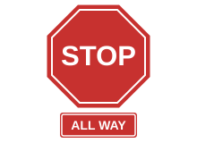
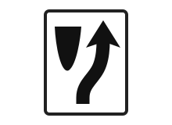
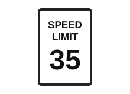

Daylight first, then a later cutoff For the first three months a Florida learner may drive only in daylight. After that, supervised driving can continue until 10 p.m. (Getting Your License: Learner's License)
Supervision in the front passenger seat A driver with a valid license who is at least 21 must sit in the closest seat to the learner's right. (Getting Your License: Learner's License)
The median matters for an oncoming school bus In the opposite direction you can continue with caution if a raised barrier or an unpaved median at least five feet wide separates traffic. A painted median does not count. (Sharing the Road: School Buses)
Make room for a disabled vehicle Florida's Move Over law covers a disabled vehicle stopped with hazard lights. On a multilane highway, move out of the nearest lane when safe. If you cannot move over safely, follow the reduced-speed rule. (Sharing the Road: Move Over Law)
Lights are required in rain, smoke, or fog The Florida rule applies during any of these conditions, even in daytime. Use the required lights so drivers behind you can also see you. (Safe Driving: Driving in Rain or Fog)
Practice Florida rules
Say what you would do before opening the answer. If you miss a scenario, review the named section in the handbook before trying the second example.
1. You got your learner's license last month. Can you practice after sunset if a supervisor rides along?
Answer: No. The first three months are daylight only.
For the first three months a Florida learner may drive only in daylight. After that, supervised driving can continue until 10 p.m.
Manual: Getting Your License: Learner's License
2. You've held the learner's license four months. With proper supervision, can you drive home at 9:30 p.m.?
Answer: Yes, if you finish before the 10 p.m. cutoff.
For the first three months a Florida learner may drive only in daylight. After that, supervised driving can continue until 10 p.m.
Manual: Getting Your License: Learner's License
3. An adult with a license sits in the back while your sibling occupies the front passenger seat. May you start?
Answer: No. The qualified driver needs to sit beside you.
A driver with a valid license who is at least 21 must sit in the closest seat to the learner's right.
Manual: Getting Your License: Learner's License
4. The person beside you is 20 and fully licensed. Can they be your learner supervisor?
Answer: No. Find a licensed driver who is at least 21.
A driver with a valid license who is at least 21 must sit in the closest seat to the learner's right.
Manual: Getting Your License: Learner's License
5. A school bus flashes red on the far side of a painted median. Can you proceed?
Answer: No. Stop.
In the opposite direction you can continue with caution if a raised barrier or an unpaved median at least five feet wide separates traffic. A painted median does not count.
Manual: Sharing the Road: School Buses
6. An oncoming school bus is stopped across a raised concrete barrier. Must you stop for its signal?
Answer: No, but continue cautiously and watch for children.
In the opposite direction you can continue with caution if a raised barrier or an unpaved median at least five feet wide separates traffic. A painted median does not count.
Manual: Sharing the Road: School Buses
7. A disabled car has its hazard lights on beside your lane. There is a safe gap in the adjacent lane. What should you do?
Answer: Move to the lane farther from the stopped vehicle.
Florida's Move Over law covers a disabled vehicle stopped with hazard lights. On a multilane highway, move out of the nearest lane when safe. If you cannot move over safely, follow the reduced-speed rule.
Manual: Sharing the Road: Move Over Law
8. The same shoulder is beside a single lane in your direction. What do you do instead of trying to change lanes?
Answer: Slow to the speed required by the Move Over rule and pass cautiously.
Florida's Move Over law covers a disabled vehicle stopped with hazard lights. On a multilane highway, move out of the nearest lane when safe. If you cannot move over safely, follow the reduced-speed rule.
Manual: Sharing the Road: Move Over Law
9. It's late morning and light rain begins. There is no fog and you can still see the road. Should you turn on your lights?
Answer: Yes, daylight does not remove the rain requirement.
The Florida rule applies during any of these conditions, even in daytime. Use the required lights so drivers behind you can also see you.
Manual: Safe Driving: Driving in Rain or Fog
10. Dense smoke from a brush fire crosses the road at midday. Does the rule apply only after sunset?
Answer: No. It also applies in smoke.
The Florida rule applies during any of these conditions, even in daytime. Use the required lights so drivers behind you can also see you.
Manual: Safe Driving: Driving in Rain or Fog
Road sign self-check
Cue
First read
Red octagon
Stop and check the intersection.
Yellow diamond
Look for the warning and prepare for the condition.
11. For Florida practice, this sign tells drivers that:
Answer: Traffic may not enter from this direction
A Do Not Enter sign means the lane or road is closed to traffic from your direction. This page uses original artwork; verify final rules in the Official Florida Driver License Handbook.
Manual: Traffic Controls
12. What is the safest meaning of this sign?
Answer: You are traveling against permitted traffic
Wrong Way warns that you are entering or driving against traffic and should safely stop and turn around. This page uses original artwork; verify final rules in the Official Florida Driver License Handbook.
Manual: Traffic Controls
13. What should a driver do at this sign?
Answer: Slow down and give right of way when needed
Yield means slow down and let traffic or pedestrians with priority go first. This page uses original artwork; verify final rules in the Official Florida Driver License Handbook.
Manual: Traffic Controls
14. For Florida practice, what action is prohibited by this sign?
Answer: A U-turn
A No U-turn sign means drivers may not reverse direction at that location. This page uses original artwork; verify final rules in the Official Florida Driver License Handbook.
Manual: Traffic Controls

15. What does the ALL WAY plaque below this STOP sign tell you?
Answer: All approaches must stop, then use right-of-way order
ALL WAY means every approach stops, not just yours. Make a complete stop and follow Florida's right-of-way rules before entering. See All Way Stop in the Official Florida Driver License Handbook.
Manual: Traffic Controls
16. What movement does this regulatory sign block?
Answer: A right turn from this approach
A red slash over the right-turn arrow means a right turn is not allowed at that location. This page uses original artwork; verify final rules in the Official Florida Driver License Handbook.
Manual: Traffic Controls
17. At this sign, what should a driver do while the signal is red?
Answer: Wait until the signal allows the turn
No Turn on Red means stopping first is not enough; wait until the signal permits the turn. This page uses original artwork; verify final rules in the Official Florida Driver License Handbook.
Manual: Traffic Controls

18. This sign tells a driver to:
Answer: Stay to the right of the island, divider, or obstruction
Keep Right is a regulatory direction sign. It tells traffic which side of an island, divider, or obstruction to use. This page uses original artwork; verify final rules in the Official Florida Driver License Handbook.
Manual: Traffic Controls
19. This sign indicates:
Answer: Traffic travels only in the arrow direction
One Way signs show the permitted direction of traffic on that road or lane. This page uses original artwork; verify final rules in the Official Florida Driver License Handbook.
Manual: Traffic Controls

20. What does this sign set?
Answer: A posted maximum speed under normal conditions
Speed limit signs show the posted maximum speed under normal conditions unless conditions require slower driving. This page uses original artwork; verify final rules in the Official Florida Driver License Handbook.
Florida: does this sign require, prohibit, or delay a right turn?
The arrow, the wording, and the signal answer different questions. Try these original cases before opening the explanation. They do not count toward your picture-quiz score.
Navigation says straight, but your lane says ONLY
At a Florida intersection you are already at the stop line in a lane marked with a right arrow and ONLY. The light turns circular green. Your directions say to go straight, and you cannot legally move into the through lane from here. What should you do?
Show reasoning
Follow the turn-only instruction for your lane. The green light does not make the through movement available from that lane.
Check for people crossing and for conflicting traffic. The lane sign does not give you priority.
When the turn is permitted and clear, turn right and reroute. Do not swerve into the through lane or go straight from the turn lane.
An arrow and ONLY identify a permitted movement, not an order to turn immediately.
You are still in that lane, but the light is steady red and a NO TURN ON RED sign applies to it. Does ONLY mean you should turn after stopping?
Check
No. ONLY tells you where that lane can go; NO TURN ON RED tells you to wait. Turn right only when the signal permits it and the path is clear.
You want to turn right at another Florida intersection. You face a circular green signal, but there is a NO RIGHT TURN sign for your approach, with no time or lane exception. No one is in the crosswalk. Can you turn right?
Show reasoning
No. An applicable NO RIGHT TURN sign still prohibits the turn when the signal is circular green.
Make a movement your lane and signal actually allow, then choose a legal route to your destination.
The crosswalk being empty does not make a prohibited movement legal.
Do not read NO RIGHT TURN as if it said NO TURN ON RED. Only the latter restriction is tied to red in this example.
Replace NO RIGHT TURN with NO TURN ON RED. The light is now circular green, but a pedestrian is crossing the street you would turn into. What changes?
Check
The red-light restriction no longer blocks the turn at this green signal. You still must yield to the pedestrian. Turn only after the path is clear and your lane permits it.